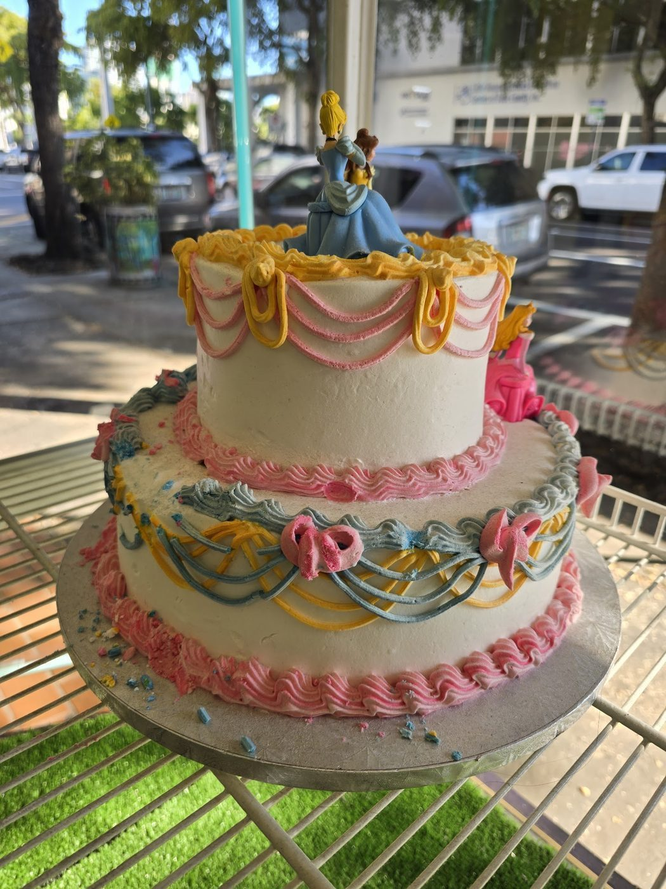
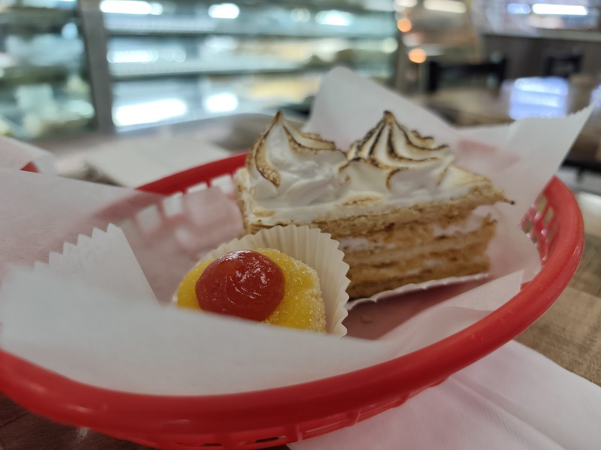

From the bakery


Pan dulce and custom cakes in Omaha
International Bakery is a family-run Hispanic bakery in Omaha. Guests pick their own pan dulce with a tray and tongs, and the case holds conchas, tres leches cakes, choco-flan, and artisan bread.

International Bakery sits at 5106 S 24th St in Omaha. It is a family-run Hispanic bakery with self-serve trays and tongs, selling retail and wholesale, with takeout and delivery.

5106 S 24th St, Omaha, NE 68107
Daily, 6:00 AM to 9:00 PM